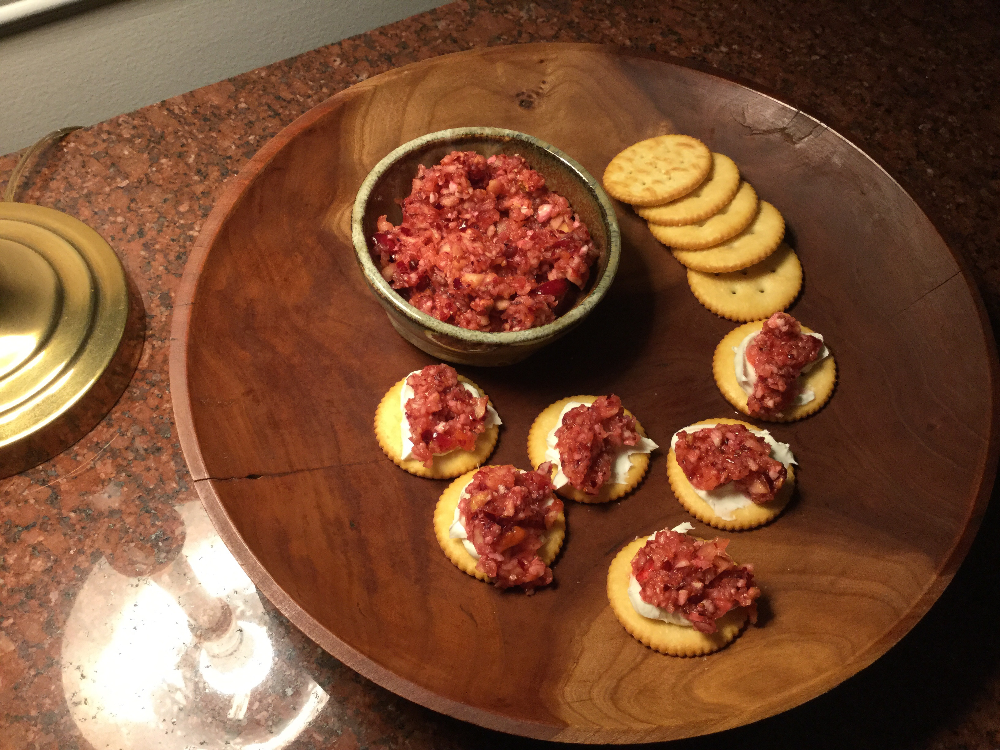

Grandma's Cranberry Sauce

Source
Ingredients
- 1 (12 ounce) bag cranberries
- 2 navel oranges - washed thoroughly, unpeeled, cut into quarters
- 3 apples - peeled, cored and halved
- 1 cup pecans
- 1 cup white sugar, or to taste
Directions
- Place the cranberries, oranges, apples, pecans, and sugar in the bowl of a food processor. Process until all ingredients are evenly ground, 2-3 minutes. Pour mixture into a bowl, cover, and refrigerate at least 2 days before serving.